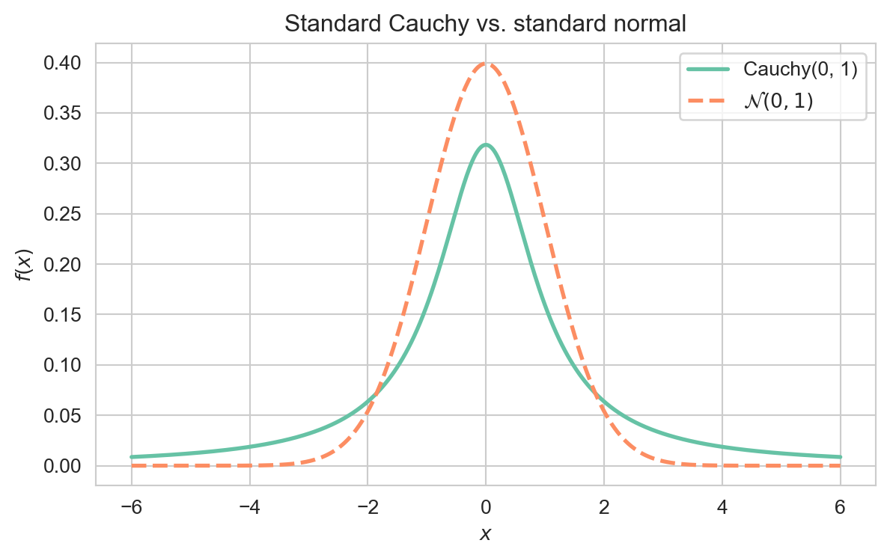

The Cauchy distribution is a continuous probability distribution notable for its heavy tails: it has no finite mean or variance. It arises as the ratio of two independent standard normal random variables and as the Student's t-Distribution with one degree of freedom.
A random variable \(X\) follows a Cauchy distribution with location parameter \(x_0 \in \mathbb{R}\) and scale parameter \(\gamma > 0\) if
\[
X \sim \text{Cauchy}(x_0, \gamma).
\]
The standard Cauchy distribution is the case \(x_0 = 0\), \(\gamma = 1\).
Interpretation: The density is symmetric and bell-shaped about \(x_0\), but its tails decay only like \(x^{-2}\), so extreme values occur far more often than for the Normal Distribution.
Plotting code
import numpy as npimport matplotlib.pyplot as pltimport seaborn as snsfrom scipy.stats import cauchy, normsns.set_style('whitegrid')sns.set_palette('Set2')x = np.linspace(-6, 6, 500)fig, ax = plt.subplots(figsize=(7, 4))ax.plot(x, cauchy.pdf(x), lw=2, label='Cauchy(0, 1)')ax.plot(x, norm.pdf(x), lw=2, ls='--', label=r'$\mathcal{N}(0, 1)$')ax.set_xlabel('$x$')ax.set_ylabel('$f(x)$')ax.set_title('Standard Cauchy vs. standard normal')ax.legend()plt.show()

Standard Cauchy density compared with the standard normal, highlighting the Cauchy distribution’s heavier tails.
For \(X \sim \text{Cauchy}(x_0, \gamma)\), the expectation \(\mathbb{E}[X]\) does not exist, and consequently neither the variance nor the moment generating function exists.
Proof. For the standard Cauchy, \(\mathbb{E}[|X|] = \int_{-\infty}^\infty
\frac{|x|}{\pi(1 + x^2)} \, dx\) diverges, since the integrand behaves like \(1/(\pi|x|)\) for large \(|x|\). Hence \(\mathbb{E}[X]\) is undefined and no higher moments exist.
The location \(x_0\) is instead the median and mode, and \(\gamma\) is the half-width at half-maximum.
4 Characteristic Function
Although the MGF does not exist, the characteristic function of \(X \sim \text{Cauchy}(x_0, \gamma)\) is well defined:
\[
\varphi_X(t) = \exp\!\left(i x_0 t - \gamma |t|\right).
\]
A consequence is that the sample mean of \(n\) i.i.d. standard Cauchy variables is again standard Cauchy — averaging does not reduce dispersion, in stark contrast to the Law of Large Numbers.
5 Relationship to Other Distributions
Normal Distribution: If \(Z_1, Z_2 \sim \mathcal{N}(0, 1)\) are independent, then \(Z_1/Z_2 \sim \text{Cauchy}(0, 1)\).